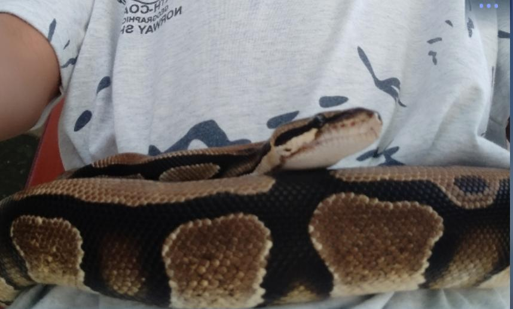
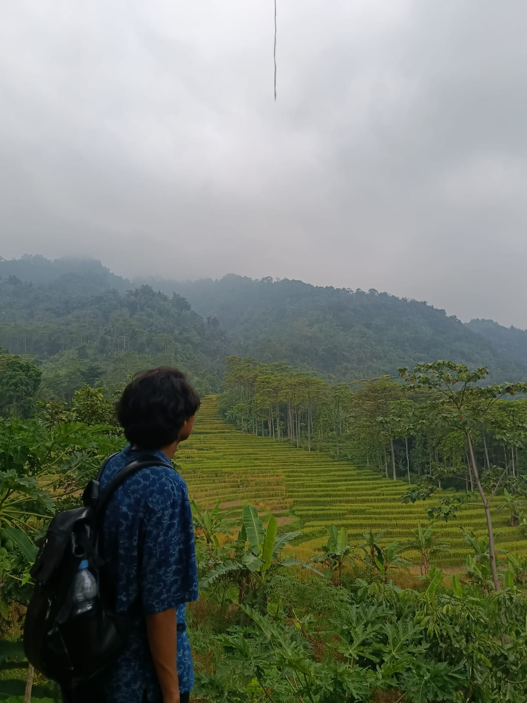
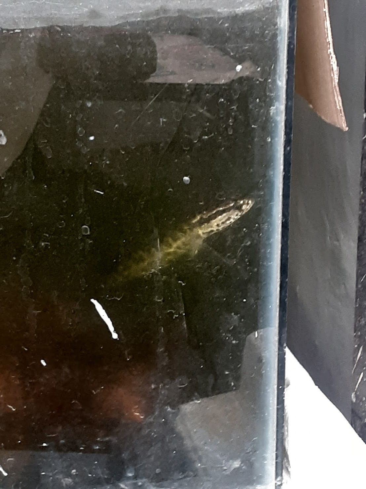

A LITTLE ABOUT ME
OFF SCREEN,
STILL ME.
Di luar kuliah dan project, ada banyak hal yang bikin gua jadi diri gua sendiri.
BACA CERITA GUA ↗01 / INTRODUCTION
Gua mahasiswa Multimedia di kampus Polimedia yang tertarik pada dunia multimedia, teknologi, game, dan sesuatu yang berbau kreatif.
Website ini adalah tempat buat mengenal gua lebih jauh, mulai dari hal yang gua suka sampai karya yang pernah gua buat.
KENALAN LEBIH JAUH ↗02 / SELECTED WORK
LAGI DIMAININ
[PLATFORM] · [GENRE]
Tulis kesan singkat lu tentang game ini di file js/main.js.
A LITTLE ABOUT ME
Di luar kuliah dan project, ada banyak hal yang bikin gua jadi diri gua sendiri.
BACA CERITA GUA ↗SOUNDTRACK OF MY LIFE
01 / THE PERSON BEHIND THE SCREEN
Sedikit cerita tentang siapa gua, apa hal yang gua suka, dan apa yang lagi gua pelajari.

MY STORY
Halo! Gua Ashari Ramadhan, biasa dipanggil Rama/Ashari/Mengalun (karena user name Instagram gua rama.mengalun). Sekarang ini gua lagi kuliah di Politeknik Negeri Media Kreatif Jakarta, program studi Teknologi Rekayasa Multimedia.
Gua suka ngedit video pake Premiere Pro apalagi ngedit scene anime dan seneng nyoba hal baru, terutama yang berhubungan dengan teknologi, visual, dan kreatif. Selain itu gua juga seneng banget kalo ada panggilan buat ngejalanin event di luar kampus kayak jadi volunteer atau jadi media partner khususnya di event Jejepangan.
MY DAILY LIFE
Menurut gua semua orang mempunyai hak untuk menyukai sesuatu, dan gua juga.

HOBBY 01
Mungkin ini cukup menantang tapi entah kenapa sedari gua kecil gua suka banget sama reptile yang satu ini.

HOBBY 02
Gua suka traveling karena menurut gua banyak hal yang harus dijelajahi dan dinikmati selama kita hidup di dunia.

HOBBY 03
Kalo tadi pelihara reptile sekarang gua juga suka pelihara ikan, karena enak aja gitu malem-malem bengong sambil ngeliatin ikan dan ditemenin segelas kopi.
FAVORITE THINGS
Musik, film, dan tontonan yang lagi atau selalu gua suka yang mungkin lu suka juga.
02 / MY DIGITAL PLAYGROUND
Tempat buat nyimpen game yang gua mainin, game favorit gua, dan sedikit masukan.
CURRENTLY PLAYING
[PLATFORM] · [GENRE]
Tambahkan catatan atau alasan lu suka game ini.
THE COLLECTION
PLAYER'S NOTE
Cobalah untuk santai sejenak dan lupakan segala beban lu. Coba mulailah buat dunia baru lu di game, karena semua orang berhak melepas penatnya.
03 / THINGS I'VE MADE
Kumpulan project kuliah, eksperimen, dan karya kreatif yang pernah gua kerjakan.
PROJECT ARCHIVE
CURRENT TOOLKIT
Tools yang gua gunakan dan pelajari.
04 / ALWAYS IN PROGRESS
Perjalanan belajar, pengalaman, dan langkah kecil yang membentuk diri gua sampai saat ini.
THE ROAD SO FAR
05 / SAY HELLO
Mau ngobrol, kolaborasi, atau project bareng? Hubungi gua lewat salah satu kanal di bawah.
GET IN TOUCH
emailkamu@example.com ↗